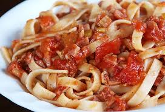
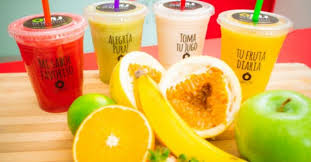

COCINANDO
Goza inteligentemente de los placeres de la mesa
Favoritos:

HISTORIAL
Pasta Artesanal
22-JUNIO-2018

Las pizzas y pastas artesanales de La osterie (negocio familiar) La Traviata ahora pone sus sabores en el centro comercial Aventura Plaza, en Urdesa.
Ahí los hermanos Mario y Osvaldo Serratore abrieron el segundo local de la marca que
crearon hace cuatro años. La primera pizzería está en la ciudadela Puerto Azul, en la vía a la costa.
Los hermanos son argentinos y el conocimiento en la preparación de pastas y pizzas lo heredaron de su madre, quien según ellos, las
hacía muy exquisitas.
Osvaldo cuenta que antes de abrir La Traviata en Puerto Azul ya había experiencia en este negocio. Fue el mentalizador de la venta de pizzas en el Salinerito de Urdesa y después abrió un local que se llama O Sole
Pizza, que luego se lo vendió a un cuñado.
JUAN CAMILO: muy buena la comida y la atención
MARCELA: Muy demorado el servicio
Los mejores jugos naturales
23-JUNIO-2018

Los jugos de frutas y verduras son una buena forma de integrar nutrientes a su dieta.
Si batalla para tomar las cinco a nueve raciones de frutas y verduras recomendadas por día, los jugos le ayudarán a hacerlo.
La buena noticia es
que el jugo contiene la mayor parte de las vitaminas, minerales y sustancias químicas vegetales (fitonutrientes) que se encuentran en la fruta entera.
Además, los jugos permiten incorporar una variedad de frutas y verduras más grande
a su dieta tales como berza, espinacas y frutas tropicales.
CARLA:Los mejores jugos de la ciudad de medellín